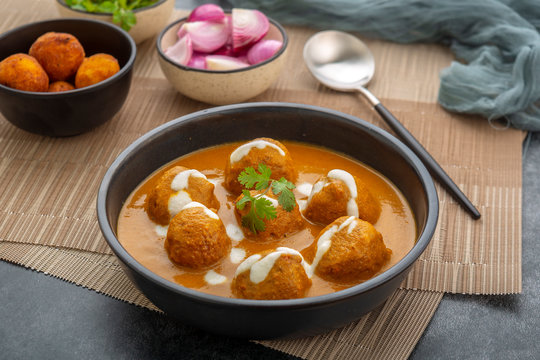

Malai Kofta

Description
Malai Kofta is a delicious dish of fried balls of potato and paneer in a rich and creamy mild gravy made with sweet onions and tomatoes.Crisp on the outside and heavenly smooth on the inside, these tasty fried dumplings are dunked in a smooth, mildly sweet and lighted spiced curry
Ingredients
- 2 large Potatoes
- Paneer
- spices such as red chili powder,garam masala
- salt
- almond powder
- cornstarch
- Cashews and raisins
- Onions
- Tomatoes
- raw spices such as indian bay leaf,cinnamon, cardamons, mace strands,cloves
- Ginger garlic paste
- tumeric powder,fennel powder,cumin powder,coriender, powder, kashimiri red chilli powder
- sugar
- cream
Steps
- First boil 2 medium to large potatoes (200 grams) in a pan, Instant pot or a pressure cooker until fork tender or knife tender. Here I have boiled the potatoes in a pressure cooker covering them with water for 4 to 5 whistles on medium hea
- When the potatoes become warm or cool, peel them and grate them in a bowl. Use a box grater or a hand-held grater.
- Add the following listed ingredients to the mashed potatoes:
100 grams grated paneer or 1 cup grated paneer
¼ teaspoon red chili powder (or cayenne pepper or paprika)
¼ teaspoon garam masala powder
salt as required
- Next add in 2 tablespoons cornflour (cornstarch) or tapioca starch and 3 tablespoons almond flour or fine almond meal.
- Mix really well, until the mixture is uniform and form a neat dough. Cover and set aside.
- Meanwhile rinse if you prefer and finely chop 10 to 12 cashews and 1 tablespoon raisins. Set aside. This will be the sweet-tangy and crunchy stuffing for the kofta.
If you are not a fan of cashews or raisins, choose to skip the stuffing or use your favorite nuts.
-
Portion the kofta mixture and shape into medium sized balls.
-
Take one kofta ball and flatten it with your palms. Place a small portion of the cashews and raisins stuffing on flattened kofta dough. If it feels sticky, rub some oil on your palms before stuffing and shaping the kofta
-
Bring the edges together and shape into a neat ball. Ensure that the stuffing remains in the center.
-
Stuff and shape all the paneer kofta balls. Cover with a lid and set aside at room temperature or refrigerate for 30 minutes.
-
Now prepare each the cashew paste, onion paste and tomato purée. Set aside. For this step, I always use the Magic Bullet because unlike a blender or chutney grinder, it is quick and very easy to clean.
For onion paste – Roughly chop 2 medium to large onions. Measure and you should get about 1 cup heaped chopped onions. Add in a blender. Without adding any water blend to a fine consistency. If you have difficulty blending them, then add in a few tablespoons of water. Transfer the onion paste or onion puree to another bowl and set aside.
For cashew paste – Soak 12 to 15 tablespoons of cashews in hot water for 20 to 30 minutes. Drain the water, add the soaked cashews in the same blender with 2 to 3 tablespoons water or as needed to make a thick or medium-thick fine paste. Set aside. If you measure, you will get about 6 to 7 tablespoons of cashew paste. Remove it from the blender in a bowl and set aside.
For tomato puree – Chop 2 medium to large tomatoes. Ensure to include tomatoes that have a sweet-tangy taste and not very sour. Add them in the same blender and blend to a fine puree. When you measure the puree, it should be 1 cup. I recommend measuring the puree before you begin cooking so that there is a balance in the flavors. If using packaged tomato puree, add 1 cup of it.
-
Heat 3 tablespoons oil in a thick-bottomed or heavy frying pan or in a wok (kadai). Add the following whole spices and fry them for a few seconds or till they release their aroma in the oil.
1 tej patta (Indian bay leaf)
1 inch cinnamon
1 black cardamom
2 green cardamoms
2 single mace strands
2 cloves
- Add the prepared onion paste. Keep in mind that sautéing onion paste takes more time. Add a few pinches of salt to make it get cooking faster.
-
After 9 to 10 minutes on a low to medium-low heat, the onion paste will become light golden, get cooked and leave the sides of the pan.
As you continue to sauté, It will become lumpy, start gathering around itself and gradually become golden. Stir non-stop so that the paste cooks evenly.
While sautéing onions if they start sticking onto the pan, add a few splashes of water. Mix and deglaze removing the stuck onion paste particles from the pan. Continue to sauté.
-
When onion paste has become golden add 2 teaspoons ginger-garlic paste. Mix and sauté for about 10 seconds or until raw aroma of ginger, garlic goes away
- Add the tomato purée.. Mix and sauté for 6 to 7 minutes on medium-low heat.
- Now add the following ground spices:
¼ teaspoon turmeric powder
¼ teaspoon fennel powder – optional
¼ teaspoon cumin powder
1 teaspoon coriander powder
1 teaspoon kashmiri red chilli powder or paprika (or ½ teaspoon red chilli powder or cayenne)
Mix well and sauté for 4 to 5 minutes.
add cashew paste
- Mix and sauté till the oil starts to leave the side of the masala paste. This will take about 9 to 10 minutes on low to medium-low heat. The paste will become lumpy and gather around itself. It will also become slightly glossy and you will see some oil releasing from the sides.Add ½ to 1 teaspoon sugar and salt according to taste. Add 2 cups of water. Combine water thoroughly with the sautéed masala paste with a spoon or wired whisk.Simmer for 8 to 10 minutes on low to medium-low heat or until the gravy becomes thick and creamy enough. You should also see some oil specks on the top layer of the gravy.
Malai kofta gravy is usually smooth, creamy and slightly thick. You can keep it slightly medium-thick consistency, the way I have done.. Add 1 teaspoon kasuri methi (dry fenugreek leaves) and 2 tablespoons light cream or cooking cream. Crush the dried fenugreek leaves in your palms and add. Simmer for 1 to 2 minutes more.
You can also use 1 tablespoon heavy or whipping cream instead of light cream.Mix well and switch off the heat. Check the taste of the curry and add sugar or salt if needed.
-
Before shaping and frying the entire batch, check a small tiny piece of the paneer kofta in hot oil. If it does not break or fall apart, then you can easily fry the remaining koftas.
If it does break, then add 1 to 2 tablespoons of cornflour (cornstarch) as a binder. Mix the binder in well, then shape into koftas.
As soon as you add this small piece of kofta, it should come up gradually and swiftly on top of the oil. This means that the oil is hot enough for the kofta to be fried.
If the kofta ball remains at the bottom or comes up slowly, the oil is warm. This will make your kofta absorb a lot of oil and they may fall apart in the oil.
If it comes up too quickly and gets browned or burnt, the oil is very hot. A highly hot oil will cook the kofta from outside but the insides will be raw or undercooked.
-
Heat oil in a pan until it reaches 180 to 190 degrees Celsius (356 to 374 degrees Fahrenheit).
Note: You can shallow fry or deep fry the kofta as you like. Here I have deep-fried, but on occasions, I flatten the kofta to a patty/tikki shape and shallow fry.
Carefully add the paneer kofta to the hot oil, being careful not to spatter the oil. When one side becomes golden, gently turn over with a slotted spoon and fry the second side. Fry turning over a couple of times until golden on both sides.Remove to a paper towel lined plate. Working in batches, fry all the paneer kofta this way and drain them on a paper napkin so that the extra oil is absorbed.
-
To serve, add the fried kofta to the malai gravy. Now you have the option of adding the kofta to the gravy in the pan and serving immediately. Or assemble in a serving bowl to make these look good and then serve.
If planning to serve it separately, then take the hot gravy in a serving bowl.